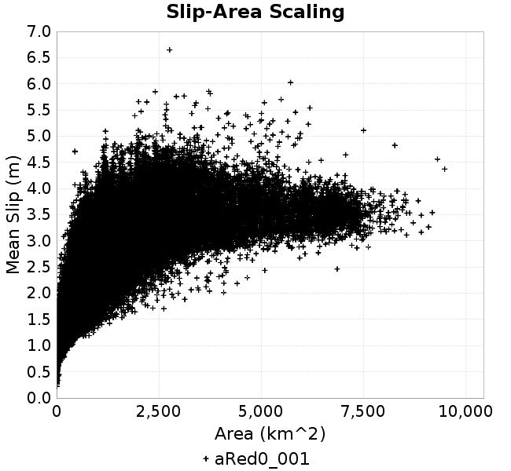
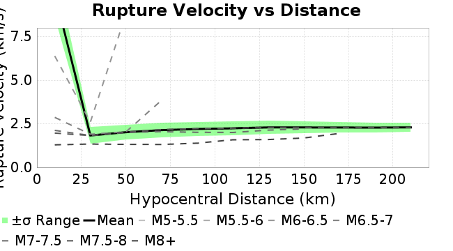
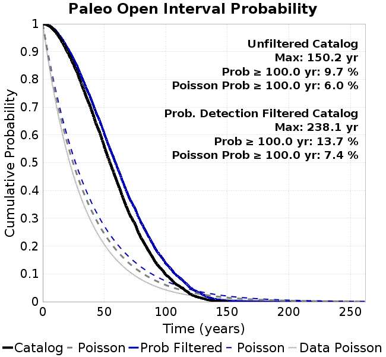

| Catalog | aRed0_001 |
|---|---|
| Author | Jaqcui Gilchrist, 2018/09/27 |
| Description | a reduction factor: fA=0.001 |
| Fault/Def Model | Fault Model 3.1, Geologic |
| Slip Velocity | 1.0 m/s |
| Average Element Area | 1.35 km^2 |
| Length | 7,102,088 events in 455,887 years |
| Frictional Params | a=0.001, b=0.008, (b-a)=0.007, ddotEQ=1 |
| Scatter | 2-D Hist |
|---|---|
 |  |
| Scatter | 2-D Hist |
|---|---|
|  |  |
| Scatter |  |
|---|---|
| Distance/Velocity |  |
| M≥6 | M≥6.5 | M≥7 | M≥7.5 |
|---|---|---|---|
 |  |
| M≥6 | M≥6.5 | M≥7 | M≥7.5 | |
|---|---|---|---|---|
| Elements | ||||
| Subsections |  |  | ||
| Sections |  |  |  |

| Min Mag | Scatter | 2-D Hist |
|---|---|---|
| M≥6.0 | ||
| M≥6.5 |  | |
| M≥7.0 |  |  |
| M≥7.5 |  |
Subsections participate in a rupture if at least 20.0 % of its area ruptures
| Min Mag | Scatter | 2-D Hist |
|---|---|---|
| M≥6.0 |  | |
| M≥6.5 |  |  |
| M≥7.0 |  |  |
| M≥7.5 |  |  |
These plots use the 5 paleoseismic sites identified in Biasi & Scharer (2019) on the Hayward, N. SAF, S. SAF, and SJC faults. By default, a rupture is counted at a paleo site if the nearest element (at the surface) slips any amount. We also alternatively apply a probability of detection model. Those results are marked as 'Prob. Filtered'.
Paleoseismic sites table:
| Site Name | Data MRI (yr) | Data Annual Rate | Catalog MRI (yr) | Catalog Annual Rate | Catalog Occurences | Prob Filtered Catalog MRI (yr) | Prob Filtered Catalog Annual Rate | Prob Filtered Catalog Occurences |
|---|---|---|---|---|---|---|---|---|
| HOG | 191.00 | 0.005235602 | 357.76 | 0.0027952052 | 1261 | 361.94 | 0.0027628613 | 1246.4 |
| FRA | 119.00 | 0.008403362 | 117.13 | 0.008537225 | 3849 | 122.58 | 0.008157872 | 3677.98 |
| COA | 181.00 | 0.005524862 | 176.22 | 0.0056748292 | 2558 | 188.48 | 0.0053057275 | 2391.39 |
| SCZ | 106.00 | 0.009433962 | 120.72 | 0.008283458 | 3735 | 139.05 | 0.0071915775 | 3242.62 |
| TYS | 329.00 | 0.0030395137 | 345.00 | 0.0028985627 | 1307 | 381.18 | 0.0026234463 | 1182.96 |
| TOTAL | 31.61 | 0.0316373 | 35.47 | 0.02818901 | 12709 | 38.40 | 0.026040358 | 11740.14 |
Paleoseismic Plots:
|  |
|---|
Open interval probabilities table:
| Open Interval (yr) | Catalog Probability | Catalog Poisson Probability | Prob. Filtered Catalog Probability | Prob. Filtered Catalog Poisson Probability | Data Poisson Probability |
|---|---|---|---|---|---|
| 10.00 | 0.97339344 | 0.75435656 | 0.9771534 | 0.77074045 | 0.72878754 |
| 20.00 | 0.89913416 | 0.5690538 | 0.9126821 | 0.5940409 | 0.53113127 |
| 30.00 | 0.7998741 | 0.42926952 | 0.82520527 | 0.45785135 | 0.3870819 |
| 40.00 | 0.68409604 | 0.3238223 | 0.7199241 | 0.35288456 | 0.28210047 |
| 50.00 | 0.5577575 | 0.24427746 | 0.6038611 | 0.2719824 | 0.2055913 |
| 60.00 | 0.4356366 | 0.18427232 | 0.4894369 | 0.20962785 | 0.14983238 |
| 70.00 | 0.31978783 | 0.13900703 | 0.3766013 | 0.16156867 | 0.10919597 |
| 80.00 | 0.22817345 | 0.10486087 | 0.2833242 | 0.12452751 | 0.079580665 |
| 90.00 | 0.15327431 | 0.07910249 | 0.20206192 | 0.095978394 | 0.057997398 |
| 100.00 | 0.09657611 | 0.05967148 | 0.13696276 | 0.07397443 | 0.04226778 |
| 110.00 | 0.05850958 | 0.045013577 | 0.09050725 | 0.057015087 | 0.030804234 |
| 120.00 | 0.027359828 | 0.033956286 | 0.0502617 | 0.043943834 | 0.022449743 |
| 130.00 | 0.011491987 | 0.025615148 | 0.025156492 | 0.033869293 | 0.016361093 |
| 140.00 | 0.0021062226 | 0.019322956 | 0.008531512 | 0.026104433 | 0.011923761 |
| 150.00 | 3.4835943E-4 | 0.014576399 | 0.0035453632 | 0.020119743 | 0.008689889 |
| 160.00 | 0.0 | 0.0109958025 | 0.0018057921 | 0.015507101 | 0.0063330824 |
| 170.00 | 0.0 | 0.008294756 | 8.732597E-4 | 0.01195195 | 0.0046154717 |
| 180.00 | 0.0 | 0.0062572034 | 4.421114E-4 | 0.009211851 | 0.0033636983 |
| 190.00 | 0.0 | 0.0047201626 | 1.2883962E-4 | 0.007099947 | 0.0024514215 |
| 200.00 | 0.0 | 0.0035606858 | 7.0324866E-5 | 0.0054722163 | 0.0017865654 |
| 210.00 | 0.0 | 0.0026860267 | 5.1002608E-5 | 0.0042176587 | 0.0013020267 |
| 220.00 | 0.0 | 0.002026222 | 2.3953691E-5 | 0.0032507202 | 9.489008E-4 |
| 230.00 | 0.0 | 0.0015284938 | 1.4042393E-5 | 0.0025054617 | 6.915471E-4 |
| 240.00 | 0.0 | 0.0011530294 | 0.0 | 0.0019310606 | 5.039909E-4 |
These plots use the full set of UCERF3 paleoseismic sites. By default, a rupture is counted at a paleo site if the nearest element (at the surface) slips any amount. We also alternativeslyapply a probability of detection model. Those results are marked as 'Prob. Filtered'.
Paleoseismic sites table:
| Site Name | Data MRI (yr) | Data Annual Rate | Catalog MRI (yr) | Catalog Annual Rate | Catalog Occurences | Prob Filtered Catalog MRI (yr) | Prob Filtered Catalog Annual Rate | Prob Filtered Catalog Occurences |
|---|---|---|---|---|---|---|---|---|
| SSanAndreasBurroFlats | 205.44 | 0.0048677 | 208.09 | 0.004805578 | 2167 | 236.23 | 0.004233228 | 1908.94 |
| SSanAndreasIndio | 277.37 | 0.0036053 | 172.31 | 0.0058035506 | 2616 | 183.21 | 0.005458315 | 2460.31 |
| SSAFMCreek1000Palms | 261.33 | 0.0038266 | 1557.21 | 6.421744E-4 | 289 | 2257.51 | 4.4296647E-4 | 199.08 |
| NSanAndreasFortRoss | 306.28 | 0.003265 | 187.50 | 0.0053332266 | 2405 | 189.94 | 0.0052646943 | 2374.06 |
| NSanAndreasNorthCoast | 263.87 | 0.0037898 | 178.31 | 0.005608318 | 2529 | 183.00 | 0.005464429 | 2464.1 |
| CalaverasfaultNorth | 618.05 | 0.001618 | 165.67 | 0.006036092 | 2720 | 237.14 | 0.004216998 | 1899.98 |
| ElsinoreTemecula | 1019.16 | 9.812E-4 | 675.90 | 0.0014795065 | 667 | 703.78 | 0.0014208899 | 640.54 |
| ElsinoreWhittier | 3196.93 | 3.128E-4 | 1539.37 | 6.496171E-4 | 292 | 1623.84 | 6.158243E-4 | 276.5 |
| SSAFCarrizoBidart | 114.71 | 0.0087179 | 121.18 | 0.008252062 | 3721 | 124.56 | 0.008028524 | 3620.23 |
| SanJacintoHogLake | 311.78 | 0.0032074 | 357.76 | 0.0027952052 | 1261 | 362.03 | 0.0027622366 | 1246.11 |
| PuenteHills | 3506.31 | 2.852E-4 | 4759.06 | 2.1012561E-4 | 94 | 5336.44 | 1.8739085E-4 | 83.93 |
| SanGregorioNorth | 1019.06 | 9.813E-4 | 399.09 | 0.0025057243 | 1130 | 410.98 | 0.0024331848 | 1097.26 |
| SanJacintoSuperstition | 508.26 | 0.0019675 | 1238.24 | 8.0759905E-4 | 364 | 1318.58 | 7.583943E-4 | 341.63 |
| SSanAndreasWrightwood | 106.04 | 0.0094304 | 151.76 | 0.006589464 | 2971 | 153.60 | 0.006510373 | 2935.33 |
| SSanAndreasPitmanCanyon | 173.48 | 0.0057643 | 142.77 | 0.007004356 | 3158 | 158.18 | 0.0063219275 | 2850.32 |
| SSanAndreasPlungeCreek | 205.36 | 0.0048695 | 354.51 | 0.0028208243 | 1272 | 439.18 | 0.0022769843 | 1026.7 |
| FrazierMountianSSAF | 148.57 | 0.0067307 | 117.13 | 0.008537225 | 3849 | 122.64 | 0.008153789 | 3676.11 |
| NSanAndreasSantaCruzSeg | 109.84 | 0.0091041 | 120.72 | 0.008283458 | 3735 | 138.86 | 0.007201354 | 3247 |
| RodgersCreek | 325.31 | 0.003074 | 165.30 | 0.0060494603 | 2727 | 225.86 | 0.0044275387 | 1995.94 |
| GreenValleyMasonRoad | 293.31 | 0.0034094 | 1713.12 | 5.837287E-4 | 263 | 2320.34 | 4.3097162E-4 | 193.87 |
| HaywardfaultNorth | 318.34 | 0.0031413 | 361.70 | 0.002764743 | 1246 | 373.74 | 0.00267563 | 1205.82 |
| HaywardfaultSouth | 167.57 | 0.0059677 | 345.00 | 0.0028985627 | 1307 | 381.09 | 0.00262406 | 1183.25 |
| Compton | 2658.16 | 3.762E-4 | 6099.82 | 1.6393934E-4 | 74 | 6661.31 | 1.5012056E-4 | 67.73 |
| SSanAndreasCoachella | 178.45 | 0.0056037 | 176.22 | 0.0056748292 | 2558 | 188.42 | 0.005307278 | 2392.11 |
| ElsinoreGlenIvy | 179.12 | 0.0055828 | 551.65 | 0.0018127287 | 817 | 598.64 | 0.0016704628 | 752.93 |
| GarlockCentralallevents | 1434.93 | 6.969E-4 | 631.47 | 0.0015836088 | 713 | 642.62 | 0.0015561411 | 700.64 |
| NSanAndreasAlderCreek | 869.64 | 0.0011499 | 187.11 | 0.0053443187 | 2410 | 190.04 | 0.0052620517 | 2372.83 |
| SSanAndreasPallettCreek | 149.30 | 0.006698 | 151.60 | 0.0065961196 | 2974 | 153.36 | 0.0065204445 | 2939.87 |
| GarlockWesternallevents | 1230.16 | 8.129E-4 | 814.21 | 0.0012281804 | 554 | 837.18 | 0.0011944876 | 538.79 |
| ElsinoreFaultJulian | 3250.98 | 3.076E-4 | 1244.66 | 8.034336E-4 | 363 | 1270.02 | 7.8738824E-4 | 355.76 |
| TOTAL | 9.08 | 0.1101451 | 14.29 | 0.06999788 | 31560 | 15.83 | 0.063187495 | 28489.44 |
Paleoseismic Plots:
 |
|---|
Open interval probabilities table:
| Open Interval (yr) | Catalog Probability | Catalog Poisson Probability | Prob. Filtered Catalog Probability | Prob. Filtered Catalog Poisson Probability | Data Poisson Probability |
|---|---|---|---|---|---|
| 10.00 | 0.8545381 | 0.49659583 | 0.87687653 | 0.53159416 | 0.33238843 |
| 20.00 | 0.59404904 | 0.24660742 | 0.64325154 | 0.28259233 | 0.110482074 |
| 30.00 | 0.35791087 | 0.122464225 | 0.41607812 | 0.15022443 | 0.036722966 |
| 40.00 | 0.193889 | 0.060815223 | 0.24683705 | 0.07985843 | 0.012206289 |
| 50.00 | 0.09499645 | 0.030200586 | 0.13297404 | 0.042452272 | 0.004057229 |
| 60.00 | 0.04377807 | 0.014997485 | 0.068334684 | 0.022567378 | 0.001348576 |
| 70.00 | 0.016635146 | 0.007447689 | 0.030634718 | 0.011996686 | 4.4825108E-4 |
| 80.00 | 0.0065128817 | 0.0036984913 | 0.013214219 | 0.0063773682 | 1.4899348E-4 |
| 90.00 | 0.0026383095 | 0.0018366554 | 0.005767057 | 0.0033901716 | 4.952371E-5 |
| 100.00 | 2.6769066E-4 | 9.120754E-4 | 0.0015090365 | 0.0018021953 | 1.6461108E-5 |
| 110.00 | 0.0 | 4.5293284E-4 | 4.971004E-4 | 9.580365E-4 | 5.4714824E-6 |
| 120.00 | 0.0 | 2.2492457E-4 | 4.466419E-5 | 5.092866E-4 | 1.8186574E-6 |
| 130.00 | 0.0 | 1.1169661E-4 | 1.847482E-5 | 2.7073376E-4 | 6.045007E-7 |
| 140.00 | 0.0 | 5.546807E-5 | 0.0 | 1.4392048E-4 | 2.0092905E-7 |
We first create a tapered moment release time series for the entire catalog. Each event's moment is distributed across a 25 year Hanning (cosine) taper. Here is a plot of a random 2,000 year section of this time series:
We then compute Welch's power spectral density estimate on the entire time series. Results are plotted below, with a Poisson randomization of the catalog also plotted in a gray line, and the 95% confidence bounds from 200 realizations as a light gray shaded area. Significant deviations outside the Poisson confidence intervals indicate synchronous behaviour.

A_1 = 0.001
fA = 0.001
B_1 = 0.008
muSlipAmp_1 = .0
muSlipInvDist_1 = 1.0
cohesion = 0.0
Dc_1 = 1.0000000000000000818e-05
mu0_1 = 0.6
ddotStar_1 = 9.9999999999999995475e-07
ddotAB_1 = 9.9999999999999995475e-07
alpha_1 = 0.0
theta0_1 = 200000000
tau0_1 = 55.1
sigma0_1 = 100
sigmaFracPin = .5
lowSigmaAction = 1
maxThetaPin = 1.0e13
ddotEQ_1 = 1
ddotEQFname =
stressOvershootFactor = 0.10000000000000000555
lameLambda = 30000
lameMu = 30000
slowSlip_1 = 0
nEq = 100000000000
KZeroFrac = 0
muPin = 1.0
tStart = 0
maxT = 3.16e13
maxWallTime = 169200
maxTrans = 1.0000000000000000159e100
faultFname = UCERF3FM.15km.1km.tri.flt
outFnameInfix = aRed0_001
writeTau = 2
writeSigma = 2
writeSlip = 0
writeSlipSpeed = 0
writeState = 0
writeTheta = 2
writePED = 1
writeTransitions = 1
minDtWrite = 0
minDtWriteCoseismic = 0
minDtWriteInterseismic = 0
minMagWrite = 7.7
writeStiffness = 0
stressRateSpecification = 1
dMu3 = 0.01000000000000000
initTauFname =
initSigmaFname =
initThetaFname =
initSlipSpeedFname =
AFname =
BFname =
DcFname =
mu0Fname =
ddotStarFname =
ddotABFname =
alphaFname =
KTauFname = /u/sciteam/gilchris/scratch/stiffness_25a589d/Ktau.25a589d.out
KSigmaFname = /u/sciteam/gilchris/scratch/stiffness_25a589d/Ksigma.25a589d.out
tFailFname =
tauFailFname =
tauDotFname =
sigmaDotFname =
KZeroFname = UCERF3FM.15km.1km.tri.KZero
pinnedFname = UCERF3FM.15km.1km.tri.pin
neighborFname = UCERF3FM.15km.1km.tri.neighbors
stressRateFname =
slowSlipFname =
writePatchFname =
DEBUG = 0
ZBrentUpperBracket = 0
receiverElementAreaFrac = 0.8
receiverElementIntTol = 1.0e-4
receiverElementSubdivisionMax = 4
tgfDist1 = 3
tgfDist1 = 10
lowSigmaAction = 1
highSigmaAction = 0